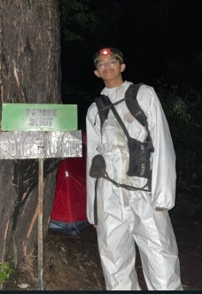
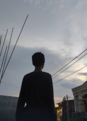

Bramastya Wahyu
Student
sangat ok, memberi semangat 45

Intan Fara Ramdhani
Student
tidak asik
Irfan
Student
pendapat ku yaitu di sini pertemanan nya enak sekali tidak memandang apapun
Iqbal
Student
Saaya selalu di benci oleh teman teman saya di sekolah mungkin karena saya lemah dan orng nya sering teledor, tetapi itu tidak membuat saya menjadi malas untuk masuk sekolah saya tetap semangat untuk mencari ilmu
Zico
Student
Terkadang teman² yang lainnya sering menindass karena saya terlihat lemah di depan mereka
Kayla
Student
Ya baik semua pelajar disini ramah dan dapat berteman dengan baik
Sandy
Student
Semua siswa nya baik dan cerdass di sini banyak siswa yang memiliki kreativitas tinggi
Farah
Student
Baik semua teman di sekolah saya sangat solidd dan kompak ini menjaga agar tali perhubungan pertemanan kita menjadi kokoh
Bramastya Wahyu
Student
dapat mempengaruhi karena kita belajar harus dengan kondisi senyaman mungkin agar kita dapat mendapat ilmu yang bisa di pahami
Intan Fara
Student
iyaa bener kalau lingkungan sekolah bersih saya bakal semangat
Irfan
Student
iyaa jika lingkungan sekolah bersih Asri dan banyak pepohonan suasana makin tenang saat pembelajaran dan sebaliknya jika lingkungan sekolah kotor dan tidak ada pepohonan maka akan menggangu suasana seperti kurang enak dan tidak fokus pembelajaran
Raka
Student
Iya karena kita dapat mengambil materi dengan cukup nyaman tanpa ada kendala atau gangguan
Zara
Student
berpengaruh, karna ketika belajar dalam keadaan kotor akan terasa risih dan tidak nyaman ketika sedang belajar
Sepila
Student
yaa jelas menurut saya tempat yang nyaman untuk di singgah yaaa, tempat bersih dan membuat saya semangat untuk belajar

Vino
Student
Ya pengaruh bangett kalau bersih siswa tidak risih dan kebersihan juga sebagian dari iman
Farra Najwa
Student
iya, kalo kotor ya risih